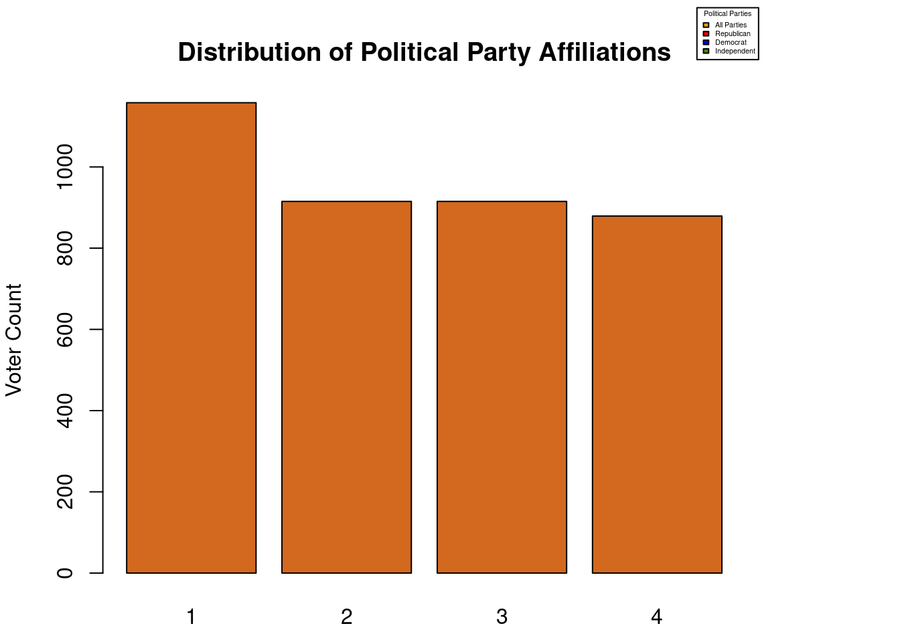

| Characteristic | ALL N = 1,1581 |
D N = 9151 |
I N = 8791 |
R N = 9151 |
|---|---|---|---|---|
| Whose handling of Covid-19 the approval poll is about | ||||
| Biden | 479 (41%) | 389 (43%) | 384 (44%) | 389 (43%) |
| Trump | 679 (59%) | 526 (57%) | 495 (56%) | 526 (57%) |
| Year the poll began | 2020-10-09 (2020-05-29, 2021-09-04) | 2020-10-10 (2020-05-23, 2021-09-18) | 2020-10-16 (2020-05-22, 2021-10-05) | 2020-10-10 (2020-05-23, 2021-09-18) |
| Year the poll ended | 2020-10-13 (2020-06-01, 2021-09-07) | 2020-10-14 (2020-05-27, 2021-09-21) | 2020-10-20 (2020-05-27, 2021-10-05) | 2020-10-14 (2020-05-27, 2021-09-21) |
| Organization that conducted the poll | ||||
| ABC News | 5 (0.4%) | 4 (0.4%) | 4 (0.5%) | 4 (0.4%) |
| ABC/Washington Post | 8 (0.7%) | 7 (0.8%) | 7 (0.8%) | 7 (0.8%) |
| American Research Group | 31 (2.7%) | 27 (3.0%) | 27 (3.1%) | 27 (3.0%) |
| AP-NORC | 24 (2.1%) | 18 (2.0%) | 18 (2.0%) | 18 (2.0%) |
| AtlasIntel | 1 (<0.1%) | 0 (0%) | 0 (0%) | 0 (0%) |
| Beacon Research/Shaw & Company | 20 (1.7%) | 20 (2.2%) | 19 (2.2%) | 20 (2.2%) |
| Benenson | 1 (<0.1%) | 0 (0%) | 0 (0%) | 0 (0%) |
| Change Research | 25 (2.2%) | 2 (0.2%) | 2 (0.2%) | 2 (0.2%) |
| Civiqs | 4 (0.3%) | 4 (0.4%) | 4 (0.5%) | 4 (0.4%) |
| Climate Nexus | 3 (0.3%) | 2 (0.2%) | 2 (0.2%) | 2 (0.2%) |
| Data for Progress | 26 (2.2%) | 24 (2.6%) | 0 (0%) | 24 (2.6%) |
| Echelon Insights | 34 (2.9%) | 20 (2.2%) | 20 (2.3%) | 20 (2.2%) |
| Emerson College Polling Society | 2 (0.2%) | 2 (0.2%) | 2 (0.2%) | 2 (0.2%) |
| Fairleigh Dickinson | 1 (<0.1%) | 1 (0.1%) | 1 (0.1%) | 1 (0.1%) |
| Firehouse Strategies/Øptimus | 16 (1.4%) | 10 (1.1%) | 10 (1.1%) | 10 (1.1%) |
| Gallup | 12 (1.0%) | 12 (1.3%) | 12 (1.4%) | 12 (1.3%) |
| GBAO | 1 (<0.1%) | 0 (0%) | 0 (0%) | 0 (0%) |
| Global Strategy Group | 2 (0.2%) | 0 (0%) | 0 (0%) | 0 (0%) |
| Global Strategy Group/GBAO/Navigator Research | 102 (8.8%) | 98 (11%) | 98 (11%) | 98 (11%) |
| Harris Poll | 25 (2.2%) | 24 (2.6%) | 24 (2.7%) | 24 (2.6%) |
| HarrisX | 37 (3.2%) | 29 (3.2%) | 29 (3.3%) | 29 (3.2%) |
| Hart Research Associates | 7 (0.6%) | 2 (0.2%) | 2 (0.2%) | 2 (0.2%) |
| Hart Research Associates/Public Opinion Strategies | 19 (1.6%) | 1 (0.1%) | 1 (0.1%) | 1 (0.1%) |
| Hofstra University | 2 (0.2%) | 2 (0.2%) | 2 (0.2%) | 2 (0.2%) |
| Ipsos | 99 (8.5%) | 34 (3.7%) | 28 (3.2%) | 34 (3.7%) |
| John Zogby Strategies/EMI Research Solutions | 1 (<0.1%) | 1 (0.1%) | 1 (0.1%) | 1 (0.1%) |
| Kaiser Family Foundation | 6 (0.5%) | 5 (0.5%) | 5 (0.6%) | 5 (0.5%) |
| Lake Research Partners/The Tarrance Group | 2 (0.2%) | 2 (0.2%) | 2 (0.2%) | 2 (0.2%) |
| Marist | 22 (1.9%) | 14 (1.5%) | 14 (1.6%) | 14 (1.5%) |
| Marquette Law School | 2 (0.2%) | 2 (0.2%) | 2 (0.2%) | 2 (0.2%) |
| McLaughlin | 4 (0.3%) | 4 (0.4%) | 4 (0.5%) | 4 (0.4%) |
| Monmouth U. | 8 (0.7%) | 8 (0.9%) | 8 (0.9%) | 8 (0.9%) |
| Morning Consult | 135 (12%) | 130 (14%) | 129 (15%) | 130 (14%) |
| MSR Group | 1 (<0.1%) | 0 (0%) | 0 (0%) | 0 (0%) |
| Nationscape | 42 (3.6%) | 42 (4.6%) | 42 (4.8%) | 42 (4.6%) |
| NewsNation/Decision Desk HQ | 1 (<0.1%) | 0 (0%) | 0 (0%) | 0 (0%) |
| NORC | 1 (<0.1%) | 0 (0%) | 0 (0%) | 0 (0%) |
| OnMessage Inc. | 1 (<0.1%) | 0 (0%) | 0 (0%) | 0 (0%) |
| Øptimus | 8 (0.7%) | 8 (0.9%) | 8 (0.9%) | 8 (0.9%) |
| Pew | 3 (0.3%) | 3 (0.3%) | 0 (0%) | 3 (0.3%) |
| Public Religion Research Institute | 3 (0.3%) | 2 (0.2%) | 2 (0.2%) | 2 (0.2%) |
| PureSpectrum | 2 (0.2%) | 1 (0.1%) | 1 (0.1%) | 1 (0.1%) |
| Quinnipiac | 27 (2.3%) | 27 (3.0%) | 27 (3.1%) | 27 (3.0%) |
| Rasmussen (Pulse Opinion Research) | 5 (0.4%) | 4 (0.4%) | 4 (0.5%) | 4 (0.4%) |
| Redfield & Wilton Strategies | 31 (2.7%) | 21 (2.3%) | 21 (2.4%) | 21 (2.3%) |
| Research America Inc. | 1 (<0.1%) | 1 (0.1%) | 0 (0%) | 1 (0.1%) |
| RMG Research | 2 (0.2%) | 2 (0.2%) | 2 (0.2%) | 2 (0.2%) |
| Sacred Heart University | 1 (<0.1%) | 0 (0%) | 0 (0%) | 0 (0%) |
| Selzer | 4 (0.3%) | 4 (0.4%) | 4 (0.5%) | 4 (0.4%) |
| Siena College/NYT Upshot | 1 (<0.1%) | 1 (0.1%) | 1 (0.1%) | 1 (0.1%) |
| Socioanalítica Research | 1 (<0.1%) | 0 (0%) | 0 (0%) | 0 (0%) |
| SSRS | 17 (1.5%) | 16 (1.7%) | 16 (1.8%) | 16 (1.7%) |
| Suffolk | 6 (0.5%) | 6 (0.7%) | 6 (0.7%) | 6 (0.7%) |
| SurveyMonkey | 29 (2.5%) | 29 (3.2%) | 29 (3.3%) | 29 (3.2%) |
| SurveyUSA | 4 (0.3%) | 4 (0.4%) | 4 (0.5%) | 4 (0.4%) |
| Susquehanna | 3 (0.3%) | 3 (0.3%) | 3 (0.3%) | 3 (0.3%) |
| TargetSmart | 2 (0.2%) | 2 (0.2%) | 2 (0.2%) | 2 (0.2%) |
| TIPP | 19 (1.6%) | 0 (0%) | 1 (0.1%) | 0 (0%) |
| U. South Florida | 1 (<0.1%) | 0 (0%) | 0 (0%) | 0 (0%) |
| University of Maryland/Washington Post | 4 (0.3%) | 4 (0.4%) | 4 (0.5%) | 4 (0.4%) |
| Winston | 11 (0.9%) | 0 (0%) | 0 (0%) | 0 (0%) |
| YouGov | 239 (21%) | 226 (25%) | 225 (26%) | 226 (25%) |
| Zogby (Internet) | 1 (<0.1%) | 0 (0%) | 0 (0%) | 0 (0%) |
| Organization that sponsored the poll | ||||
| 510 (44%) | 433 (47%) | 404 (46%) | 433 (47%) | |
| 314 Action | 1 (<0.1%) | 0 (0%) | 0 (0%) | 0 (0%) |
| ABC | 1 (<0.1%) | 0 (0%) | 0 (0%) | 0 (0%) |
| ABC News | 29 (2.5%) | 14 (1.5%) | 14 (1.6%) | 14 (1.5%) |
| Accountable.US | 1 (<0.1%) | 0 (0%) | 0 (0%) | 0 (0%) |
| American Enterprise Institute | 2 (0.2%) | 0 (0%) | 0 (0%) | 0 (0%) |
| Axios | 5 (0.4%) | 5 (0.5%) | 5 (0.6%) | 5 (0.5%) |
| Brookings Institute, Carnegie Corporation of New York, Ford Foundation, Stand Together Trust, Unitarian Univarsalist Veatch Program at Shelter Rock | 1 (<0.1%) | 0 (0%) | 0 (0%) | 0 (0%) |
| CBS News | 9 (0.8%) | 9 (1.0%) | 9 (1.0%) | 9 (1.0%) |
| Center for American Progress Action Fund,Protect Our Care | 3 (0.3%) | 1 (0.1%) | 1 (0.1%) | 1 (0.1%) |
| CNBC | 21 (1.8%) | 0 (0%) | 0 (0%) | 0 (0%) |
| CNN | 15 (1.3%) | 15 (1.6%) | 15 (1.7%) | 15 (1.6%) |
| COVID Collaborative | 1 (<0.1%) | 1 (0.1%) | 1 (0.1%) | 1 (0.1%) |
| Crooked Media | 1 (<0.1%) | 0 (0%) | 0 (0%) | 0 (0%) |
| Daily Kos | 4 (0.3%) | 4 (0.4%) | 4 (0.5%) | 4 (0.4%) |
| Economist | 130 (11%) | 125 (14%) | 125 (14%) | 125 (14%) |
| Fox Business | 1 (<0.1%) | 1 (0.1%) | 1 (0.1%) | 1 (0.1%) |
| FOX News | 19 (1.6%) | 19 (2.1%) | 18 (2.0%) | 19 (2.1%) |
| George Washington University | 2 (0.2%) | 1 (0.1%) | 1 (0.1%) | 1 (0.1%) |
| Georgetown University Institute of Politics and Public Service | 2 (0.2%) | 2 (0.2%) | 2 (0.2%) | 2 (0.2%) |
| Grinnell | 1 (<0.1%) | 1 (0.1%) | 1 (0.1%) | 1 (0.1%) |
| Grinnell College | 3 (0.3%) | 3 (0.3%) | 3 (0.3%) | 3 (0.3%) |
| Groundwork Collaborative,Roosevelt Institute | 1 (<0.1%) | 0 (0%) | 0 (0%) | 0 (0%) |
| Harvard CAPS | 22 (1.9%) | 21 (2.3%) | 21 (2.4%) | 21 (2.3%) |
| Hill.TV | 36 (3.1%) | 28 (3.1%) | 28 (3.2%) | 28 (3.1%) |
| Huffington Post | 28 (2.4%) | 28 (3.1%) | 28 (3.2%) | 28 (3.1%) |
| HuffPost | 4 (0.3%) | 4 (0.4%) | 4 (0.5%) | 4 (0.4%) |
| Investor's Business Daily | 19 (1.6%) | 0 (0%) | 1 (0.1%) | 0 (0%) |
| More in Common | 1 (<0.1%) | 1 (0.1%) | 1 (0.1%) | 1 (0.1%) |
| NBC News | 24 (2.1%) | 18 (2.0%) | 18 (2.0%) | 18 (2.0%) |
| NBC News, The Wall Street Journal | 7 (0.6%) | 1 (0.1%) | 1 (0.1%) | 1 (0.1%) |
| NBC, The Wall Street Journal | 1 (<0.1%) | 0 (0%) | 0 (0%) | 0 (0%) |
| New York Times | 5 (0.4%) | 5 (0.5%) | 5 (0.6%) | 5 (0.5%) |
| Nexstar | 1 (<0.1%) | 1 (0.1%) | 1 (0.1%) | 1 (0.1%) |
| Northeastern,Harvard,Rutgers | 1 (<0.1%) | 1 (0.1%) | 1 (0.1%) | 1 (0.1%) |
| Northeastern,Harvard,Rutgers,Northwestern | 1 (<0.1%) | 0 (0%) | 0 (0%) | 0 (0%) |
| NPR | 3 (0.3%) | 2 (0.2%) | 2 (0.2%) | 2 (0.2%) |
| NPR, PBS Newshour | 3 (0.3%) | 2 (0.2%) | 2 (0.2%) | 2 (0.2%) |
| NPR, PBS NewsHour | 12 (1.0%) | 8 (0.9%) | 8 (0.9%) | 8 (0.9%) |
| NPR,PBS NewsHour | 4 (0.3%) | 2 (0.2%) | 2 (0.2%) | 2 (0.2%) |
| Politico | 70 (6.0%) | 70 (7.7%) | 70 (8.0%) | 70 (7.7%) |
| Politico,Harvard | 1 (<0.1%) | 0 (0%) | 0 (0%) | 0 (0%) |
| Protect Our Care | 3 (0.3%) | 0 (0%) | 0 (0%) | 0 (0%) |
| Reuters | 65 (5.6%) | 17 (1.9%) | 11 (1.3%) | 17 (1.9%) |
| Rural Organizing | 2 (0.2%) | 2 (0.2%) | 2 (0.2%) | 2 (0.2%) |
| Senate Opportunity Fund | 1 (<0.1%) | 0 (0%) | 0 (0%) | 0 (0%) |
| Survey Center on American Life | 1 (<0.1%) | 0 (0%) | 0 (0%) | 0 (0%) |
| The Economist | 2 (0.2%) | 1 (0.1%) | 1 (0.1%) | 1 (0.1%) |
| The Federalist | 3 (0.3%) | 3 (0.3%) | 3 (0.3%) | 3 (0.3%) |
| The Guardian,Vice News | 1 (<0.1%) | 1 (0.1%) | 1 (0.1%) | 1 (0.1%) |
| The New York Times | 1 (<0.1%) | 1 (0.1%) | 1 (0.1%) | 1 (0.1%) |
| The Washington Post | 1 (<0.1%) | 1 (0.1%) | 1 (0.1%) | 1 (0.1%) |
| USA Today | 6 (0.5%) | 6 (0.7%) | 6 (0.7%) | 6 (0.7%) |
| Winning the Issues | 3 (0.3%) | 0 (0%) | 0 (0%) | 0 (0%) |
| Yahoo News | 62 (5.4%) | 57 (6.2%) | 56 (6.4%) | 57 (6.2%) |
| Yale Program on Climate Change Communication, George Mason University Center for Climate Change Communication | 1 (<0.1%) | 0 (0%) | 0 (0%) | 0 (0%) |
| Size of Polling Sample | 1,357 (1,006, 1,885) | 516 (412, 748) | 433 (306, 583) | 396 (354, 640) |
| Missing | 0 | 10 | 11 | 10 |
| Stratification of Voters | ||||
| Adults | 682 (59%) | 552 (60%) | 522 (59%) | 552 (60%) |
| Registered voters | 400 (35%) | 334 (37%) | 328 (37%) | 334 (37%) |
| Likely Voters | 75 (6.5%) | 29 (3.2%) | 29 (3.3%) | 29 (3.2%) |
| Missing | 1 | 0 | 0 | 0 |
| 1 n (%); Median (Q1, Q3) | ||||
Epi 590 R Final Project
Final Project
Summary Table for Covid Approval Polls
Summary Table for Covid Disapproval Polls
| Characteristic | all N = 6781 |
|---|---|
| Which subject the poll is asking Americans about | |
| concern-economy | 212 (31%) |
| concern-infected | 466 (69%) |
| Year the poll began | |
| 2020 | 622 (92%) |
| 2021 | 56 (8.3%) |
| Year the poll ended | |
| 2020 | 620 (91%) |
| 2021 | 58 (8.6%) |
| Organization that conducted the poll | |
| ABC | 7 (1.0%) |
| AP-NORC | 15 (2.2%) |
| Change Research | 8 (1.2%) |
| Civiqs | 4 (0.6%) |
| Climate Nexus | 1 (0.1%) |
| Data for Progress | 22 (3.2%) |
| Echelon Insights | 13 (1.9%) |
| Emerson College Polling Society | 1 (0.1%) |
| Firehouse Strategies/Øptimus | 16 (2.4%) |
| Fox News | 4 (0.6%) |
| Gallup | 21 (3.1%) |
| Global Strategy Group/GBAO/Navigator Research | 150 (22%) |
| Greenberg Quinlan Rosner | 1 (0.1%) |
| Harris Poll | 55 (8.1%) |
| Hart Research Associates | 5 (0.7%) |
| Ipsos | 37 (5.5%) |
| Kaiser Family Foundation | 7 (1.0%) |
| Langer Research Associates | 1 (0.1%) |
| Léger | 52 (7.7%) |
| Long Island University | 1 (0.1%) |
| Maru/Blue | 1 (0.1%) |
| Monmouth U. | 9 (1.3%) |
| Morning Consult | 61 (9.0%) |
| NBC/Wall Street Journal | 3 (0.4%) |
| NORC | 1 (0.1%) |
| Øptimus | 8 (1.2%) |
| PPP | 2 (0.3%) |
| Public Religion Research Institute | 1 (0.1%) |
| PureSpectrum | 2 (0.3%) |
| Quinnipiac | 7 (1.0%) |
| Rasmussen (Pulse Opinion Research) | 1 (0.1%) |
| RMG Research | 2 (0.3%) |
| SSRS | 2 (0.3%) |
| Survey 160 | 3 (0.4%) |
| SurveyMonkey | 24 (3.5%) |
| SurveyMonkey Audience | 1 (0.1%) |
| SurveyUSA | 4 (0.6%) |
| TargetSmart | 2 (0.3%) |
| U. Maryland | 1 (0.1%) |
| University of Maryland/Washington Post | 4 (0.6%) |
| YouGov | 118 (17%) |
| Organization that sponsored the poll | |
| 408 (60%) | |
| ABC News | 17 (2.5%) |
| American Enterprise Institute | 2 (0.3%) |
| Association for Canadian Studies | 52 (7.7%) |
| Axios | 18 (2.7%) |
| Business Insider | 1 (0.1%) |
| Caring Across Generations | 1 (0.1%) |
| CBS News | 13 (1.9%) |
| Center for American Progress Action Fund,Protect Our Care | 1 (0.1%) |
| CNBC | 5 (0.7%) |
| COVID Collaborative | 2 (0.3%) |
| Daily Kos | 4 (0.6%) |
| Economist | 58 (8.6%) |
| Fortune | 4 (0.6%) |
| Gradient Metrics | 3 (0.4%) |
| Harvard | 1 (0.1%) |
| Healthinsurance.com | 1 (0.1%) |
| Huffington Post | 29 (4.3%) |
| HuffPost | 4 (0.6%) |
| Interfaith Youth Core | 1 (0.1%) |
| NBC News | 18 (2.7%) |
| New York Times | 1 (0.1%) |
| Nexstar | 1 (0.1%) |
| Northeastern,Harvard,Rutgers | 2 (0.3%) |
| Politico | 4 (0.6%) |
| Protect Our Care | 4 (0.6%) |
| ScottRasmussen.com | 1 (0.1%) |
| State Science and Technology Institute | 1 (0.1%) |
| Tally | 1 (0.1%) |
| The Economist | 2 (0.3%) |
| The Washington Post | 2 (0.3%) |
| University of Chicago Divinity School | 1 (0.1%) |
| University of Maryland,Washington Post | 1 (0.1%) |
| USA Today | 1 (0.1%) |
| Wall Street Journal | 1 (0.1%) |
| Washington Post/University of Maryland | 1 (0.1%) |
| Yahoo News | 11 (1.6%) |
| Size of Polling Sample | 1,031 (1,002, 1,960) |
| Stratification of Voters | |
| Adults | 443 (65%) |
| Registered voters | 214 (32%) |
| Likely Voters | 21 (3.1%) |
| 1 n (%); Median (Q1, Q3) | |
Regression Table for Covid Approvals Data Frame
Regression Table for Population Regressed on Party, Approval Ratings and Disapproval Ratings
| Characteristic | Beta | 95% CI | p-value |
|---|---|---|---|
| (Intercept) | 0.31 | -0.23, 0.84 | 0.3 |
| Party affiliated with | 0.01 | -0.01, 0.04 | 0.3 |
| Approval Ratings | 0.02 | 0.01, 0.02 | <0.001 |
| Disapproval Ratings | 0.02 | 0.01, 0.02 | <0.001 |
| Abbreviation: CI = Confidence Interval | |||
Bar Graph Depicting Party Distribution
